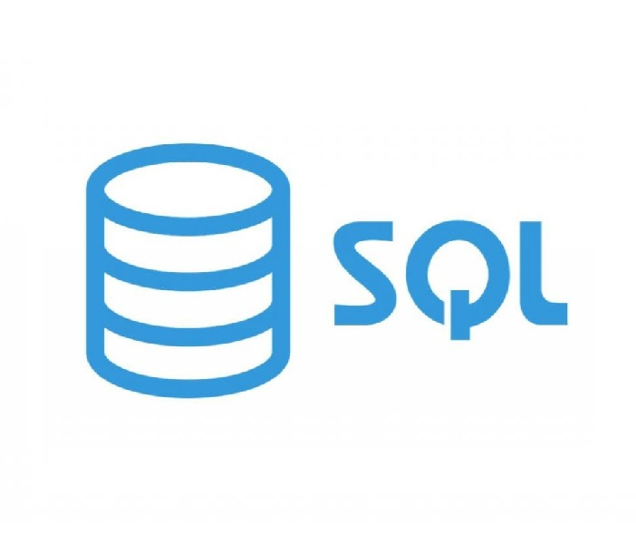
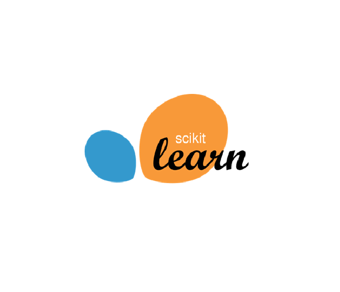
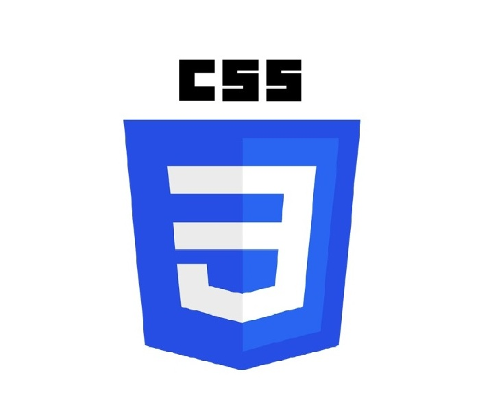
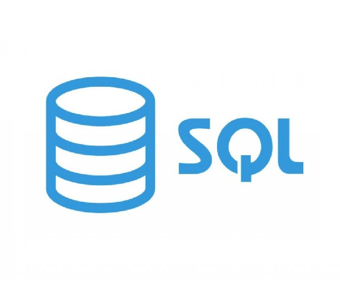
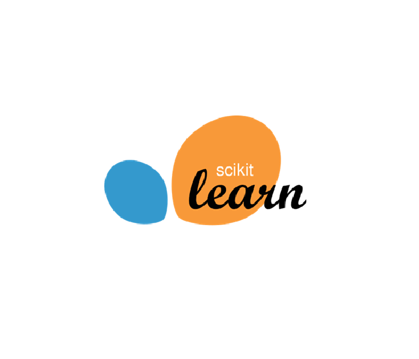
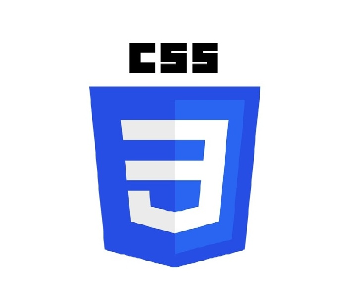

Soy Gonzalo. Un analista de datos apasionado por el aprendizaje continuo.
Tengo un título de grado en Comercio Internacional. Experiencia en gestión operativa, análisis financiero y optimización de procesos.
Durante más de 6 años lideré iniciativas de mejora continua en HISAN, impulsando decisiones basadas en datos mediante reportes, KPIs y automatización de tareas.
Actualmente continúo mi formación técnica en Análisis de Datos y tengo intenciones de realizar un Master’s Degree en Data Science para seguir potenciando mi perfil analítico y técnico.


 




